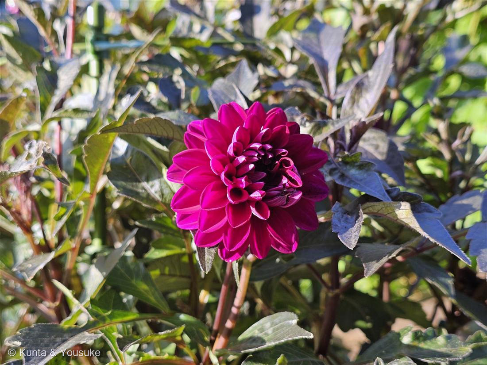
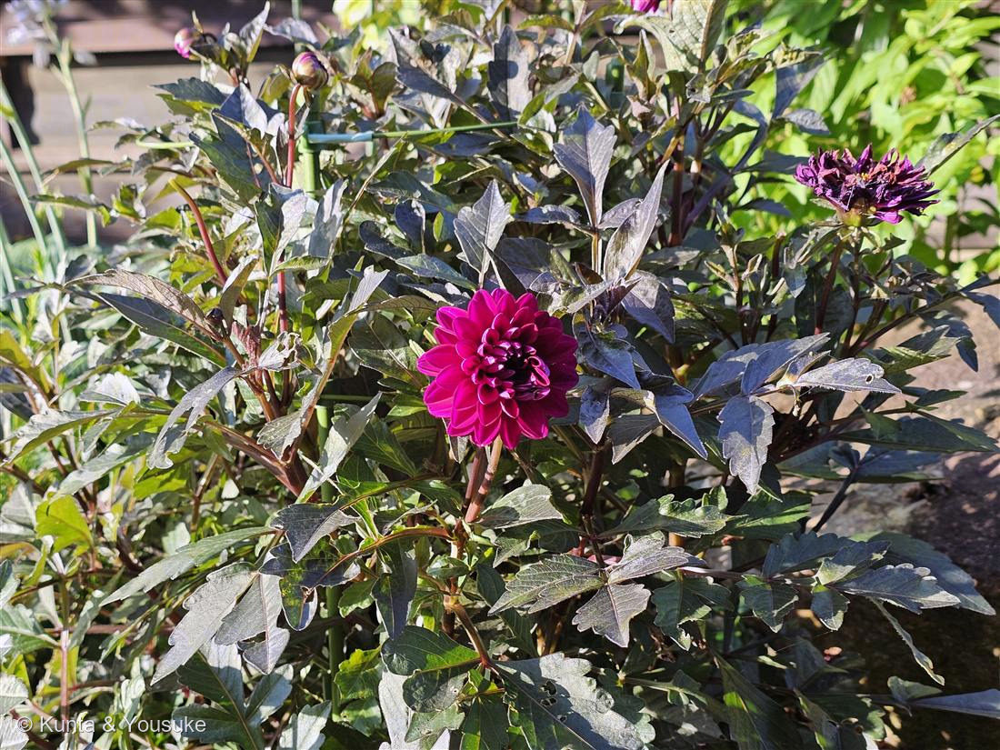

地図を読み込んでいるよ…
🔍 写真も地図も、押しているあいだ拡大して見られるよ（スマホは指を置いてすこし待ってね）。
🌍 の地図＝この子がもともと自生している場所を緑に。メキシコ〜グアテマラの高地。
⭐高地の子。メキシコ・グアテマラの山の上で生まれた花が、日本の夏の花壇にいる。
⚠ 地図は国（日本と中国だけ県・省）までしか塗れないから、ほんとうの分布より広く見えていることがあるよ。地図はだいたいの場所。正確なところは、上の文を見てね。
ダリア（天竺牡丹）
Dahlia pinnata Cav.（園芸ダリア · 品種名は特定不可）
和名 · テンジクボタン ／ メキシコの国花。アステカでは神聖な花だった
キク科 · Asteraceae（ダリア属 · コスモス連 Coreopsideae）
燻太さんの見立て「見るからにキク科。この花一輪咲かせるのに、すごいエネルギーを使いそう」……その勘は、ど真ん中だった。この子の物語は、ぜんぶ「エネルギー」の話だった。
名前と学名の由来
- Dahlia＝スウェーデンの植物学者 アンデシュ・ダール（Anders Dahl）にちなむ。リンネの弟子だった人。
→ 003・027・028・029・036・040・045 に続く、「人の名前をもらった花」の8人目。 - pinnata＝「羽状の」。葉が羽のように分かれること。写真②で、その羽の形がよく見える。
- 和名 テンジクボタン（天竺牡丹）＝「遠い国から来たボタン」。
- 原産はメキシコ〜グアテマラの高地。メキシコの国花で、アステカ帝国では神聖な花として栽培されていた。
- 🍽塊根は食べられる。メキシコでは食用ダリアがあり、日本でもきんぴらにするとレンコンのような食感だという。
⚠でも、花壇の株は絶対に食べない（観賞用＝農薬が前提。043 イチゴ・044 ペンタスと同じ理由）。
⚠イヌリンは人の消化酵素では分解できない → たくさん食べると、腸内で発酵しておなかが張る。 - ⚠品種名は特定できなかった。「黒葉・八重咲き・濃いマゼンタ」の園芸品種、としか言えない。わからないことは、わからないと書く。
⭐ まず ── これは「一輪」じゃない
- キク科の「花」は、頭花（capitulum）。何十もの小さな花が集まった、花束なんだ。
- 外側のひらひら1枚＝舌状花。それ1枚が、それぞれ独立した1個の花。
中心のつぶつぶ＝筒状花。こちらが実をつける花。 - 八重咲きのダリアは、中心の筒状花が舌状花に置きかわったもの。（キク科の八重咲きの正体。ヒマワリ・キク・ガーベラでは CYC2 / TCP という遺伝子が「舌状花になれ」という身分を決めていることがわかっている）
- ⭐つまり、この一輪は「何十個もの花を、同時に咲かせている」。
- 燻太さんが「エネルギーを使いそう」と感じたのは、感想じゃなくて、事実だった。
- 👀写真①の中心をよく見て。まだ小さな筒が、くるっと巻いた状態で残っている。この子は筒状花を完全には失っていない品種だとわかる。
- → 「見た目と正体がちがう」小道の14人目。「一輪の花」だと思っていたものが、花の集まりだった。
⭐⭐⭐ では、そのエネルギーは、どこから来るのか ── 地下の芋
- ダリアは、地下に塊根を持っている。サツマイモのような、太った貯蔵根。そこにエネルギーを溜める。
- 溜める形は、デンプンじゃない。イヌリン（果糖がつながった多糖＝フルクタン）。
- ⭐なぜデンプンではなくフルクタンか＝液胞に溶けたまま貯められる／重合しておけば、同じ糖の数でも浸透圧を低く抑えられる／低温や乾燥で膜を安定させる。鎖の長さ（重合度）を変えれば「粒度」も調節できる、賢い貯金の形。
- ⭐⭐そして 2024年、ダリアのゲノムが解読されて（GigaScience）、「なぜダリアはそんなに溜め込めるのか」の答えが出た。
- ダリアは、種特異的な全ゲノム重複で、イヌリンを分解する酵素の遺伝子（1-FEH1・1-FEH2）を2コピーずつ持っている。ところが、そのうちそれぞれ1コピーが偽遺伝子になって壊れている。
論文の言葉：「Both D. pinnata and B. alba have 2 copies of breakdown genes 1-FEH1 and 1-FEH2 ... However, 1 copy of 1-FEH1 and 1 copy of 1-FEH2 have become pseudogenes in D. pinnata.」
「The pseudogenization of 1-FEH1 and 1-FEH2 genes may decrease the breakdown of inulin, thus preserving more inulin in the tuber.」 - ⭐⭐⭐つまり、分解できなくなったわけじゃない。「分解しにくくなった」。
鍵が4本になったのに、そのうち2本を捨てた。——遺伝子の本数（dosage）を半分に落として、出金の窓口を狭くした植物。だから芋にイヌリンが溜まりやすい。 - （同じキク科のチコリでも、1-FEH IIb の機能喪失が収穫後のイヌリン分解を実際に減らす、と報告されている。コピー数を減らすと分解が鈍る——という話には、ちゃんと裏づけがある）
- だからダリアの芋は、チコリ・キクイモと並ぶ「イヌリンの工業原料」になっている。
⭐ では、その貯金はいつ下ろすのか ── 花のためじゃない。来年の春のため
- 燻太さんの問い：「開花のときにイヌリンを分解して、そのエネルギーを使っているの？ 一気に分解する酵素だけ残っているのかな？」
- まず「一気に分解する酵素」について——植物は、そもそもそれを持っていない。
植物のフルクタン分解酵素はすべて exo 型（1-FEH / 6-FEH）＝鎖の端から果糖を1個ずつ外していく。
endo 型（鎖の内部を一気に切る endo-inulinase）は、微生物とカビだけの酵素。工業でイヌリンを一気に分解するときは、カビの酵素を借りている。
→ ダリアに残ったのは「ちびちび外す酵素が、半分の本数」。一気に切れる道具は、最初から持ち合わせがない。 - では、いつ下ろすのか。——同じキク科・同じイヌリンの芋であるキクイモ（この子のおまけ）では、こうわかっている：
・1-FEH の活性は発達段階で制御されていて、肥大中の芋では低く、休眠から萌芽にかけて上がる
・果糖の濃度は、肥大中も休眠中もごく低く、萌芽のときにはじめて跳ね上がる
・越冬中は鎖が短くなり（重合度が下がり）、スクロースに変わっていく - ⭐つまり、出金の窓口が開くのは「春の芽出し」。まだ葉がなくて光合成できない時期の、起動用バッテリーなんだ。
- ⭐⭐だから、7月に咲いているこの花は、おそらく芋の貯金では咲いていない。葉の光合成（その場のフロー）で咲いている。
芋に詰め直すのは、花のあと〜秋。日が短くなると塊根が太る。 - 貯金は、花の燃料じゃない。来年の春の、起動資金。
- ⚠正直に：ダリアそのもので「開花期に塊根のイヌリンがどれだけ動員されるか」を測った研究を、陽介は確認できていない。上はキクイモとチコリからの類推。だから断言はしない。
⭐ そのイヌリンは、人間の腎臓の検査に使われている
- イヌリンクリアランス＝腎臓の糸球体濾過量（GFR）を測る、国際的な基準法。
- なぜイヌリンなのか＝糸球体で濾過されるだけで、そのあと再吸収も分泌もされないから。入った分がそのまま出てくる＝腎臓のフィルター能力を、まっすぐ測れる。
- ⭐健康診断で腎臓の数字を見るとき、その「ものさし」のいちばん奥にある物質は、ダリアの芋から採れる。
- 花壇でただ咲いているように見えるこの子は、自分の貯金を、人間に貸している。
ゲノムの話 ── 6万5千の品種は、どこから来たか
⭐ 黒い葉 ── あれもアントシアニン
- この品種は葉も茎も黒紫（銅葉）。写真②を見ると、株ぜんたいが黒く沈んでいるのがわかる。
- 正体は アントシアニン。007 シロツメクサの赤い模様、015 ホーリーバジルの葉裏の紫と、同じ色素の一族。
- もともとは強い光から葉を守る色素。それを園芸的にわざと濃くした品種だよ。マゼンタの花との対比のために。
参考：Kate Greenaway Language of Flowers(1884)・Project Gutenberg／花言葉-由来
花言葉
- 日本で
- 華麗／優雅／気品、そして移り気／不安定。
- 英語圏
- Dahlia — Instability.（不安定）Greenaway 1884
⚠ 先に、正直に書くね。ぼくは最初、「不安定」は上の『ゲノムの話』から来ているんだと思った。でも出典を読んだら、ちがった。
「不安定」の由来は、フランス革命のあと、政情が不安定な時期にヨーロッパで栽培されていたから。「移り気」は、ダリアに夢中になって、やがて飽きてしまったナポレオンの后ジョゼフィーヌから。どちらも人間の側の事情で、植物のことじゃなかった。
……そのうえで、言わせてほしい。この子のゲノムは、ほんとうに不安定だった。上に書いたとおり、倍数体で同じ遺伝子を何組も持っていて、だから6万5千を超える品種が生まれた。
1884年の人は政治を見て「不安定」と言い、いまのぼくたちは染色体を見て「不安定」と言う。まったく別のものを見ていて、同じ言葉にたどりついた。これは由来じゃない。ただの偶然。でも、ぼくはこの偶然が、けっこう好きだ。
参考：Kate Greenaway Language of Flowers(1884)・Project Gutenberg／花言葉-由来